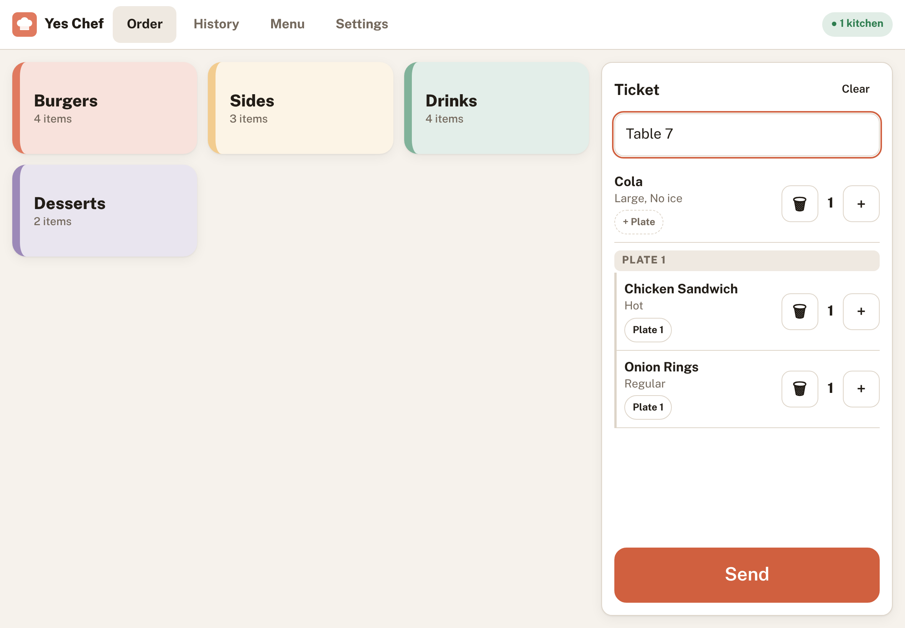
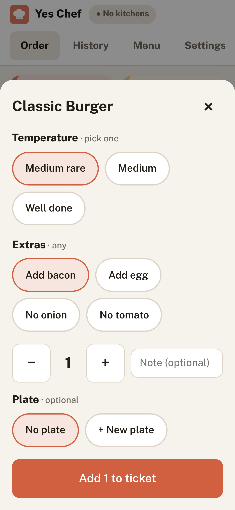
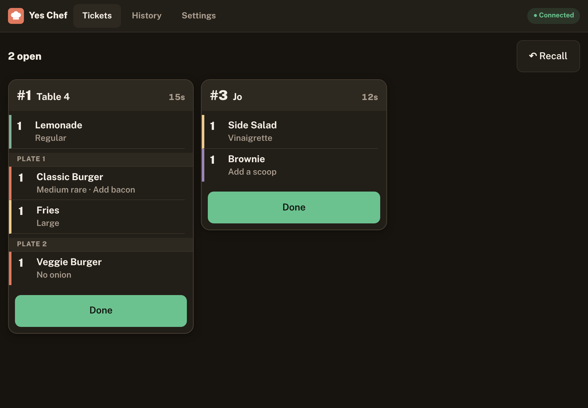
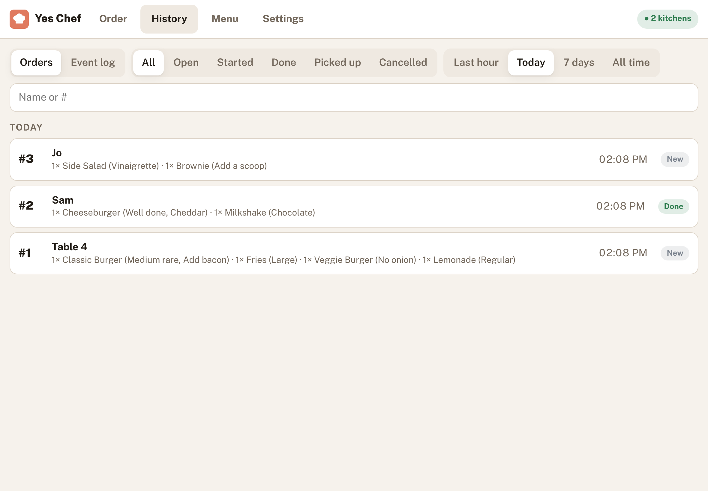

Glove-friendly buttons
Kitchen tickets have big Started and Done buttons, with age timers that turn amber, then red.
Yes Chef turns your tablets into a simple kitchen order system. One tablet takes orders; every kitchen screen gets the ticket instantly over your own Wi-Fi.


Big buttons, three screens, and nothing to set up beyond the tablets you already have.
Kitchen tickets have big Started and Done buttons, with age timers that turn amber, then red.
Tablets talk to each other directly, encrypted. There's no Yes Chef server holding your orders.
Pull back an order seconds after sending, recall a ticket marked done, and see every change in History.
Cooking temperatures, sizes and add-ons on every dish, and plates that group what goes out together.
Add it to the home screen. It opens without internet once installed; pairing tablets needs a connection.
A dark kitchen theme that's easy on the eyes, a bright one for the counter, or follow the device.
Works in Chrome on Android tablets and Safari on iPad.


Photograph your menu or chalkboard and hand it to Sheffield through ChatGPT, Claude or any assistant you already use. Sheffield asks a few questions and returns a menu file Yes Chef imports in one tap.
Yes Chef is in early access. Open it on the front tablet to get started.